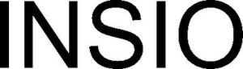

Trade Mark Journal No.2025/011 14 March 2025
WO0000001842523 (19,20,21)
Office of origin: France
Date of International Registration:11 October 2024
Date of designation in the UK:
11 October 2024

The mark consists of the letters I N S I O
International priority date claimed: 29 May 2024
(France)
(5058171)
- Class 19
- Non-metallic building materials, namely tempered and semi-tempered glazing and double-glazing (or triple-glazing), laminated glazing and double-glazing (or triple-glazing), annealed glazing and double-glazing (or triple-glazing), glazing and double-glazing (or triple-glazing) for thermal insulation and enhanced thermal insulation, glazing and double-glazing (or triple-glazing) for acoustic insulation; building glass; glazing elements based on vacuum glass; glass panels; safety glass for use in construction; double-glazed hermetically sealed elements (not of metal); glazing not of metal having fire-resistant properties; thermal insulating glass for use in construction; glass in the form of plates for use in doors; insulating glass for buildings; tempered glass for building; insulating glass for building; enameled glass for building; laminated flat glass for building; shaped glass plates for building; heat protection glass for building; convex glazing; glass-based vacuum glazing.
- Class 20
- Transparent glass doors for refrigeration furniture.
- Class 21
- Glassware; unworked and semi-worked glass other than for building; printed glass; lacquered glass; opaque or translucent enameled glass; screen-printed glass; decorative glass; laminated glass other than for building; anti-reflective glass; glass sheets; semi-worked flat glass; laminated flat glass other than for construction; tempered glass other than for building; glass sheets coated with layers; glass panes for showcases; insulating glass for showcases; semi-finished glass designed to absorb heat and insulate cold; all the aforesaid goods other than for construction.
SAINT-GOBAIN GLASS FRANCE
Representative: Madame CASALONGA Caroline CASALONGA, 31 Rue de Fleurus, F-75006 Paris, FRANCE